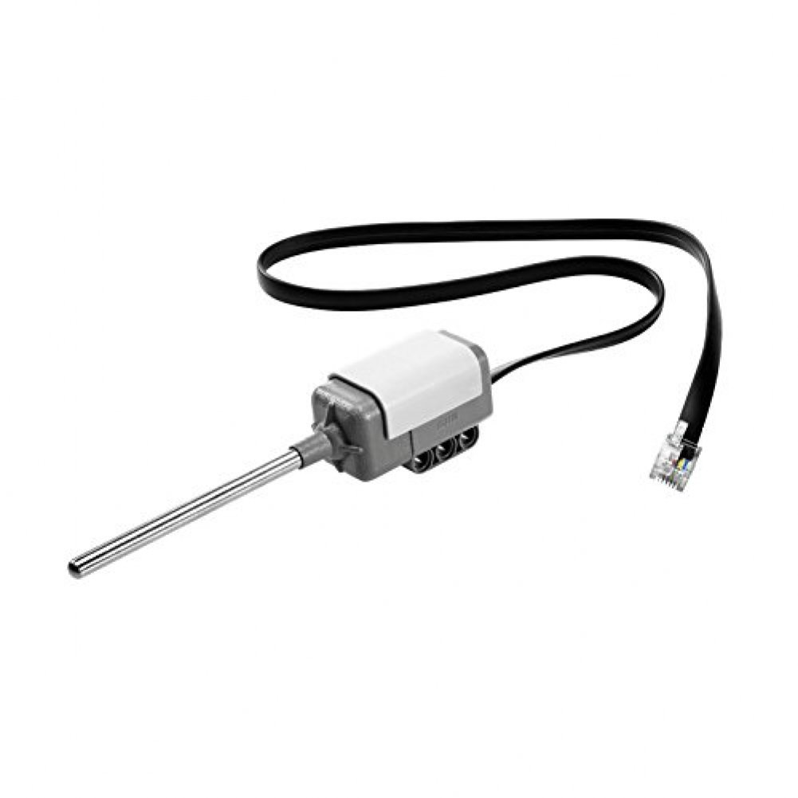

1. Introduction
Temperature is a physical quantity that expresses hot and cold. It is the manifestation of thermal energy, present in all matter, which is the source of the occurrence of heat, a flow of energy, when a body is in contact with another that is colder or hotter.
Temperature is measured with a thermometer. Thermometers are calibrated in various temperature scales that historically have used various reference points and thermometric substances for definition. The most common scales are the Celsius scale (formerly called centigrade, denoted as °C), the Fahrenheit scale (denoted as °F), and the Kelvin scale (denoted as K), the last of which is predominantly used for scientific purposes by conventions of the International System of Units (SI).
You could connect this sensor to the brick to retrieve the Temperature.

2. How to use the sensor
import ev3dev.sensors.nxt.NXTTemperatureSensor;
import java.util.stream.IntStream;
import lejos.hardware.port.SensorPort;
import lejos.robotics.SampleProvider;
import lombok.extern.slf4j.Slf4j;
@Slf4j
public class NXTTemperatureSensorDemo {
public static void main(String[] args) {
NXTTemperatureSensor temp1 = new NXTTemperatureSensor(SensorPort.S1);
final SampleProvider sp = temp1.getCelsiusMode();
float [] sample = new float[sp.sampleSize()];
IntStream.range(1,10).boxed()
.map(i -> {
sp.fetchSample(sample, 0);
return sample[0];
})
.forEach(temp -> LOGGER.info("Temperature: {}", temp));
}
}References: